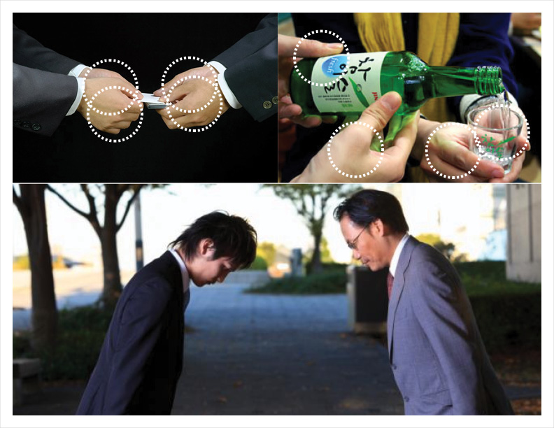
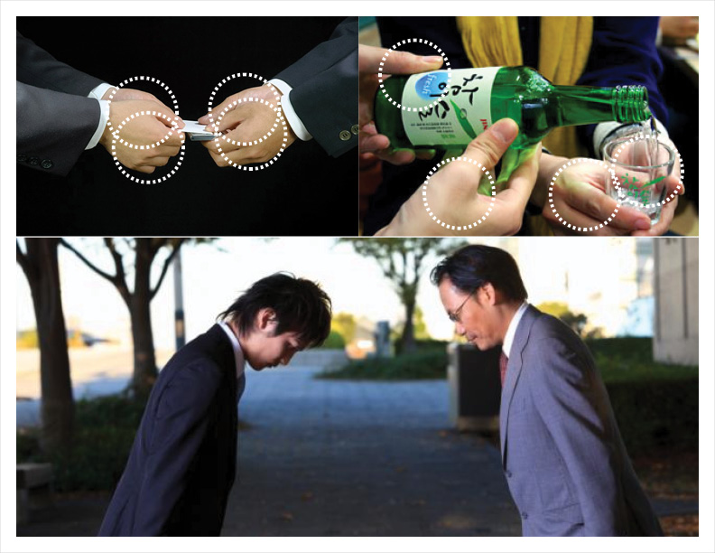

Kenkyo
Kenyko Vessel is a ceramic pouring vessel whose form and function are influenced by East Asian notions of humility and respect. 

Inspiration
Two hands are used to express respect and humility, kenkyo in Japanese, when giving or receiving within many East Asian social hierarchies.
Character Development
Initial sketches explored character forms that convey the respect and humility of the bowing gesture.Physical Development
Clay models explored form, scale and ergonomics. The final form was derived from a reduction of curves and subtraction of geometry.Production
Producing the vessel began by creating a plaster mould mased on the final clay positive model, followed by casting, adjusting, drying, and glazing.
Use
The vessel's soft form invites use, while its scale requires the support of two hands when lifting and pouring, thus compelling the user to make a gesture of kenkyo.